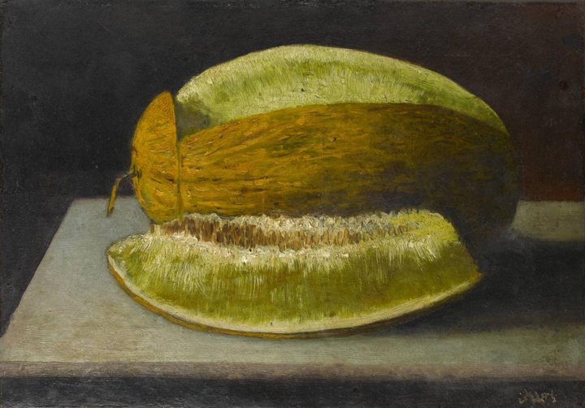
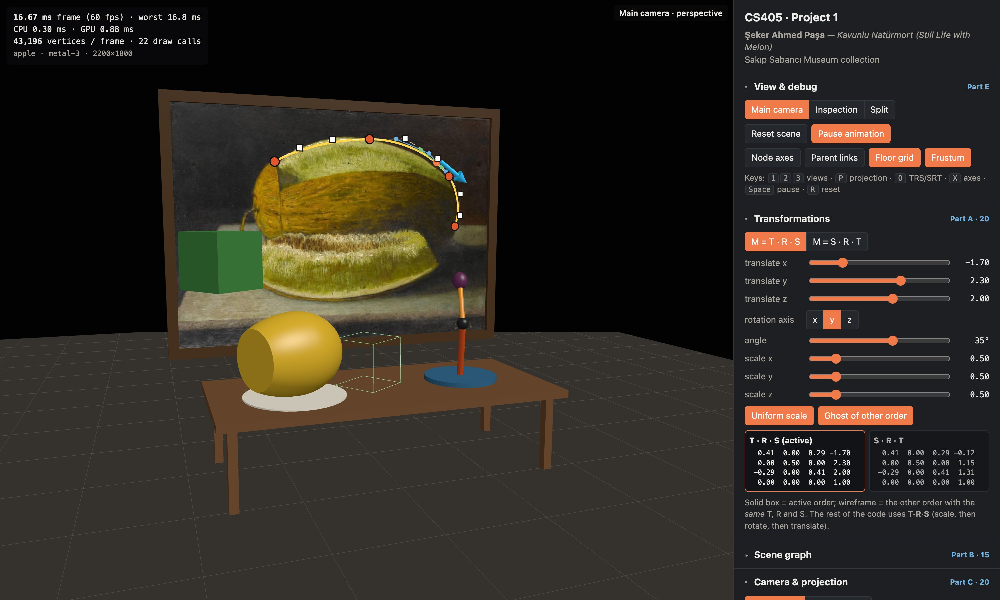
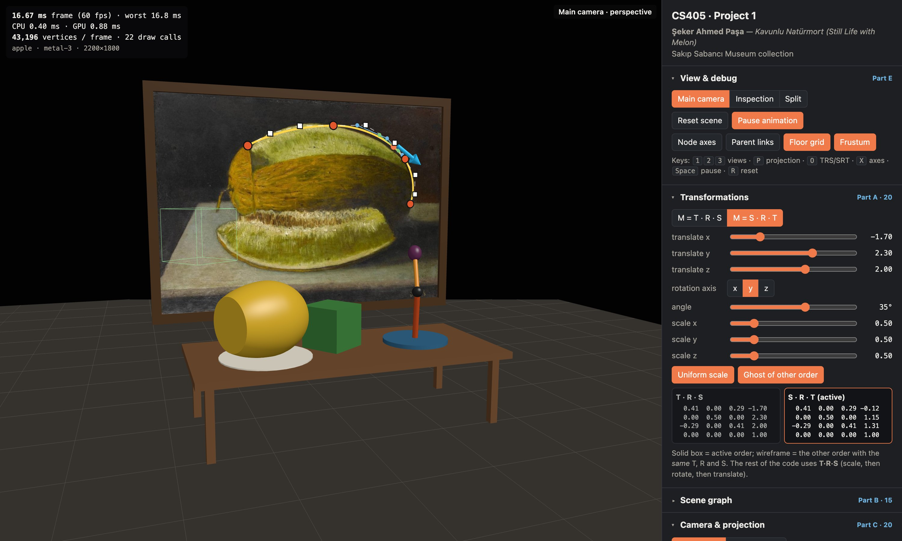
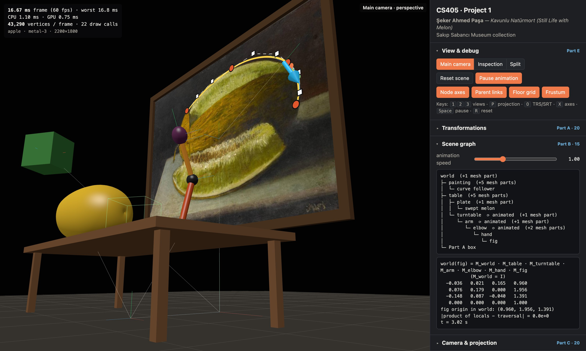
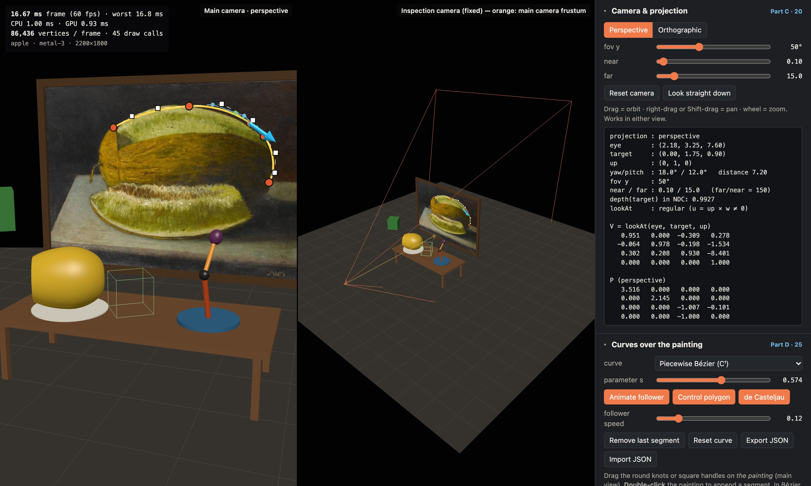
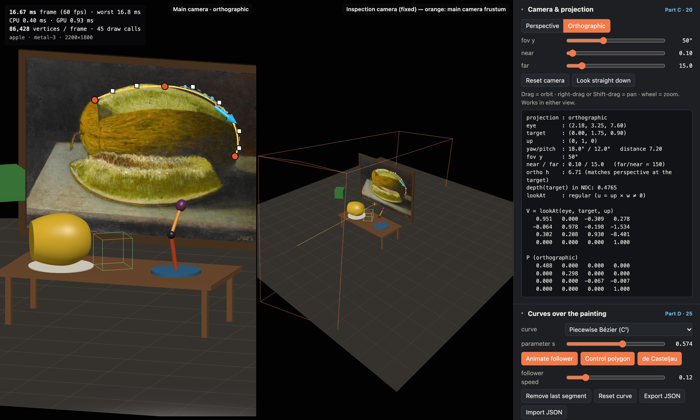
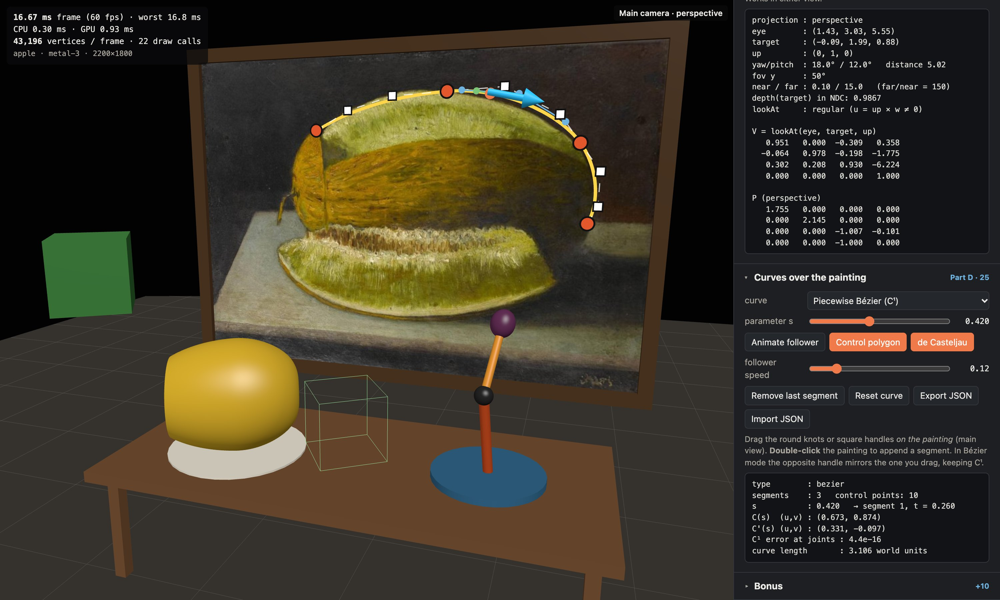
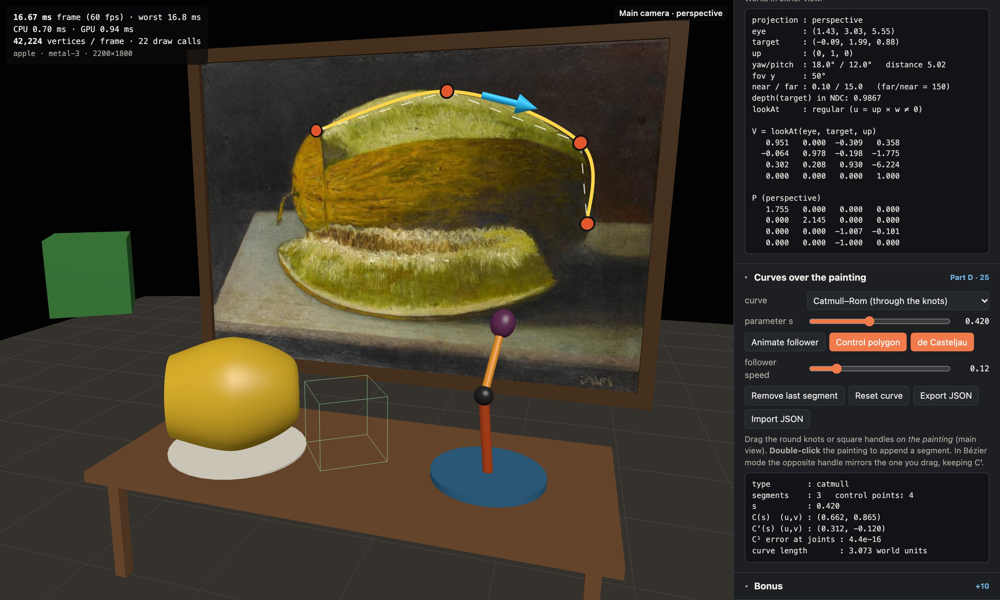
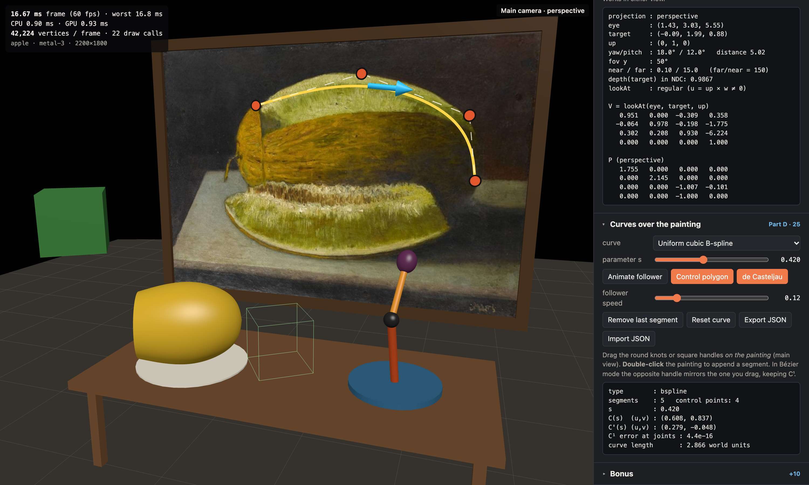
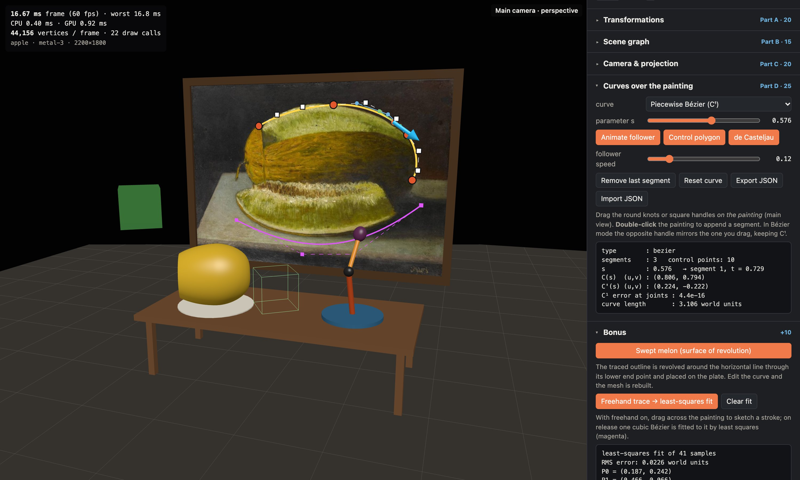

Şeker Ahmed Paşa — Kavunlu Natürmort (Still Life with Melon). I chose it because it has strong organic contours: the long, smooth upper outline of the melon is a natural target for a piecewise cubic curve, and the cut melon suggests a solid of revolution, which I used for the bonus. The still life also suggests the 3D content: a table standing in front of the painting with a plate, a melon and a small mechanism on it.
The application is one WebGPU page (npm install && npm run dev). The painting is an sRGB
texture on a 4.0 × 2.79 quad at z = 0. Everything else derives from
pclip = P · V · M · pobject, which is literally the line
o.clip = cam.viewProj * (obj.model * vec4f(pos, 1)) in the vertex shader. Code is split into
src/math, src/scene, src/render and src/ui; 31 unit tests (Vitest) cover
the matrix, curve and scene-graph code.
Conventions. Matrices are column-major Float32Array(16), element (r, c) at m[4c + r], uploaded
to uniform buffers unchanged; vectors are columns, so A·B applies B first. The world is right-handed with
+y up, and the camera looks down −z.
mat4.js implements identity, multiply, translate, rotate x/y/z, scale, transpose, the rigid inverse
[R t; 0 1]−1 = [Rᵀ −Rᵀt; 0 1], plus a general inverse (for mouse rays and the frustum) and the normal matrix
(M−1)ᵀ. The objects in front of the painting (table, legs, plate, turntable, arm, the swept melon and the green box)
are all placed with these matrices. The green box is driven from the UI (translation, axis + angle, scale), with a
switch between the two orders and both matrices printed on screen.


T·R·S t=(−1.7, 2.3, 2.0), R=R_y(35°), S=0.5 0.410 0.000 0.287 −1.700 0.000 0.500 0.000 2.300 −0.287 0.000 0.410 2.000 0.000 0.000 0.000 1.000
S·R·T same T, R, S 0.410 0.000 0.287 −0.123 0.000 0.500 0.000 1.150 −0.287 0.000 0.410 1.307 0.000 0.000 0.000 1.000
Why they differ. Matrix products do not commute. In T·R·S the point is scaled in the box's own axes, rotated about the box's own origin, and only then translated, so the last column is exactly the translation t that I asked for. In S·R·T the translation is applied first; the rotation then swings the already-moved box around the world origin and the scale shrinks its distance from the origin. The last column becomes S·R·t = 0.5 · Ry(35°)(−1.7, 2.3, 2.0) = (−0.123, 1.150, 1.307), so the box lands on the table. The 3×3 blocks are equal here only because a uniform scale commutes with a rotation. With a non-uniform scale (untick Uniform scale) S·R ≠ R·S and the S·R·T box is also sheared. The rest of the code uses T·R·S: it is the only order in which "size, orientation, position" can be edited independently. It is also what a scene-graph local transform means: placing a child relative to its parent.
Node holds local, parent, children and world. A depth-first
traversal computes world = parent.world · local. The tree has 27 nodes and is six levels deep (world → table → turntable → arm → elbow → hand → fig). Mesh-only children
(table top, legs, frame bars, the arm's cylinder) hang under transform nodes so that scaling a shape never scales its
children. Three joints are animated: turntable Ry(0.6t), arm Rz(0.45 sin 1.3t),
elbow Rz(0.9 sin(2.1t + 1)). The fig therefore traces a 3D path driven by the whole chain. Debug mode draws
every node's local axes (x red, y green, z blue) and a line from each parent to each child.
world ├─ painting T(0,2.544,0) │ └─ curve follower ├─ floor ├─ table T(0,0,1.35) │ ├─ plate T(−0.95,0.88,0.1) │ │ └─ swept melon │ └─ turntable T(0.95,0.88,0)·R_y(0.6t) ⟳ │ └─ arm T(0,0.05,0)·R_z(θ₁) ⟳ │ └─ elbow T(0,0.6,0)·R_z(θ₂) ⟳ │ └─ hand T(0,0.44,0) │ └─ fig T(0,0.07,0)·S(.17,.2,.17) └─ Part A box T·R·S from the UI (mesh-only children omitted)

At t = 0: Ry(0) = I, θ₁ = 0.45 sin 0 = 0 and θ₂ = 0.9 sin 1 = 0.75732 rad (sin θ₂ = 0.68698, cos θ₂ = 0.72668). Every factor above the elbow is a pure translation, so they add: (0, 0, 1.35) + (0.95, 0.88, 0) + (0, 0.05, 0) + (0, 0.6, 0) = elbow at (0.95, 1.53, 1.35). Below the elbow, Rz(θ₂) acts on the hand and fig offsets (0, 0.44, 0) + (0, 0.07, 0) = (0, 0.51, 0), which gives (−0.51 sin θ₂, 0.51 cos θ₂, 0) = (−0.35036, 0.37061, 0). The upper 3×3 is Rz(θ₂)·S(0.17, 0.2, 0.17):
world(fig) by hand 0.17cosθ₂ −0.2sinθ₂ 0 0.95 − 0.35036 0.17sinθ₂ 0.2cosθ₂ 0 1.53 + 0.37061 0 0 0.17 1.35 0 0 0 1 = [0.1235 −0.1374 0 0.5996; 0.1168 0.1453 0 1.9006; 0 0 0.17 1.35; 0 0 0 1]
world(fig) from the traversal (program) 0.1235 -0.1374 0.0000 0.5996 0.1168 0.1453 0.0000 1.9006 0.0000 0.0000 0.1700 1.3500 0.0000 0.0000 0.0000 1.0000 → identical to 4 decimals; the panel also prints |Π locals − traversal| = 0 at every frame.
The camera looks from e at a. Because it looks down its own −z axis, the backward axis is w = (e − a)/|e − a|. Cross product 1 gives a right vector perpendicular to both up and w: u = (up × w)/|up × w|. Cross product 2 gives the true up vector: v = w × u, which is already unit length because w ⊥ u. The camera-to-world matrix is C = [u v w e; 0 0 0 1], a rigid transform. Its inverse is therefore Rᵀ with −Rᵀe:
V = C−1 = [ ux uy uz −u·e ; vx vy vz −v·e ; wx wy wz −w·e ; 0 0 0 1 ]
Check: Ve = 0, and Va = (0, 0, −|e − a|), so the target is on the −z axis (unit-tested).
Degenerate case: if up ∥ w, then |up × w| ≈ 0 and u would be NaN. When the norm is below
10−6, lookAt substitutes the first world axis (−z, then x, then y) with |axis·w| < 0.9.
The orbit camera can reach pitch = ±90° exactly ("Look straight down"). The readout then reports that the fallback
was used, and the image stays upright with the painting at the top of the screen.
With f = cot(fov/2): x′ = (f/aspect)·x, y′ = f·y, w′ = −z, and z′ = A·z + B. WebGPU needs depth 0 at the near plane and 1 at the far plane (OpenGL uses −1 and 1): (−An + B)/n = 0 ⇒ B = An, and (−Af + B)/f = 1 ⇒ A = ffar/(n − ffar), B = n·ffar/(n − ffar). The orthographic matrix uses the same idea without the divide: z′ = z/(n − f) + n/(n − f), so −n ↦ 0 and −f ↦ 1, and x, y map the box [l, r] × [b, t] to [−1, 1]. Its height is 2·d·tan(fov/2), so switching projections keeps the target at the same size on screen. Default values: fov 50°, near 0.1, far 15. These give the matrices in the panel, e.g. P33 = 15/(0.1 − 15) = −1.007 and P34 = −0.101.


Near/far and depth precision. For perspective, depth is zndc(d) = f/(f − n)·(1 − n/d), so dz/dd = f·n / ((f − n)·d²): resolution falls with d² and is set mostly by n. With a 24-bit depth buffer (step ≈ 6·10−8), the smallest distinguishable depth difference is:
| near / far | Δd at d = 7.2 (target) | Δd at d = 15 | zndc of target |
|---|---|---|---|
| 0.1 / 15 (chosen) | 3.1·10−5 | 1.3·10−4 | 0.9927 |
| 0.01 / 15 | 3.1·10−4 | 1.4·10−3 | 0.9993 |
| 0.1 / 1000 | 3.1·10−5 | 1.4·10−4 | 0.9862 |
Moving near from 0.1 to 0.01 makes precision 10× worse everywhere. Pushing far to 1000 barely changes it, but it wastes range and makes the frustum useless as a drawing. Even with my values, 99 % of the depth range is used before the target. I chose 0.1 / 15: the orbit camera never gets closer than 0.6 to its target, and at the default distances the whole scene lies within 15 of the eye. The decorations drawn on the painting sit 0.012–0.032 in front of it, more than 100× the resolution, so they never z-fight. Orthographic depth is linear, with a constant step of 6·10−8·(f − n) ≈ 9·10−7.
Bézier basis. B(t) = Σ Bi(t) Pi with B0 = (1−t)³, B1 = 3(1−t)²t, B2 = 3(1−t)t², B3 = t³ (Σ Bi = ((1−t)+t)³ = 1). End points: at t = 0, B1, B2 and B3 all contain a factor t, so they vanish, and B0(0) = 1. Hence B(0) = P0. At t = 1, B0, B1 and B2 contain (1 − t), and B3(1) = 1, so B(1) = P3. ∎ Tangent: B′(t) = 3[(1−t)²(P1−P0) + 2(1−t)t(P2−P1) + t²(P3−P2)], so B′(0) = 3(P1 − P0) and B′(1) = 3(P3 − P2). de Casteljau: repeatedly lerp neighbouring points by t (4 → 3 → 2 → 1 points). The last point is B(t), and the two level-2 points span the tangent there. The app draws all levels for the segment containing the chosen parameter (blue, green and orange in the figure) and unit-tests that they agree with the Bernstein form.
C¹ joint. Consecutive segments share the knot K, so C⁰ holds automatically. With handles H₋ (before) and
H₊ (after), and equal parameter length per segment, C¹ requires B′left(1) = B′right(0):
3(K − H₋) = 3(H₊ − K), i.e. H₊ = 2K − H₋. The handles are opposite and equally long. enforceC1 applies
this after every edit and mirrors whichever handle the user did not drag; dragging a knot carries both handles. The
panel reports the largest tangent jump at the joints, which is 4·10−16. A global parameter s ∈ [0, 1] maps
to segment ⌊sN⌋ with local t = sN − ⌊sN⌋.
Second family. I implemented both. Catmull–Rom interpolates the knots with tangent (Pi+1 − Pi−1)/2 (C¹). The uniform cubic B-spline evaluates its basis ((1−t)³, 3t³−6t²+4, −3t³+3t²+3t+1, t³)/6 and is C² but only approximates the knots. Its end points are repeated three times so it starts and ends on them.



Interaction and animation. Clicking turns the pixel into a ray: NDC (x, y, 0) and (x, y, 1) are unprojected with (P·V)−1, moved into the painting's frame with the rigid inverse of its world matrix, and intersected with z = 0. That gives normalised (u, v). Knots and handles are dragged in the painting's plane, and a double-click appends a segment that keeps C¹. The arrow moves at constant speed using an arc-length table (400 chords, binary search). Its frame is x = normalised tangent, z = painting normal, y = z × x. The curve is exported as JSON in normalised coordinates (Appendix).
One application with controls to switch between main, inspection and split views, a Reset scene button,
pause, and toggles for every debug drawing. Keyboard shortcuts and controls are listed in the README. The HUD shows
average and worst frame time, CPU time, the GPU render-pass time (timestamp queries) and the number of vertices
submitted. Rendering uses 4× MSAA. All objects share one uniform buffer with 256-byte slots and dynamic offsets
(one writeBuffer per frame). Curves and debug drawings are rebuilt each frame into one vertex buffer.
Measured on my machine: Apple M1 (7-core GPU, Metal 4), macOS 26.5.2, Chrome 156. Canvas 2200 × 1800 device pixels, 24 HUD samples over 6 s per row:
| configuration | frame (avg / worst) | CPU / frame | GPU pass | vertices / frame | draw calls |
|---|---|---|---|---|---|
| main view | 16.67 / 16.8 ms | 0.80 ms | 0.91 ms | 43,196 | 22 |
| inspection view | 16.67 / 16.8 ms | 0.80 ms | 0.62 ms | 43,240 | 23 |
| split view (two cameras) | 16.67 / 16.8 ms | 0.88 ms | 0.93 ms | 86,436 | 45 |
| split + all debug drawings | 16.67 / 16.8 ms | 0.78 ms | 0.93 ms | 86,624 | 45 |
The frame time is capped by the 60 Hz display (vsync), so the useful numbers are CPU ≈ 0.8 ms and GPU ≈ 0.6–0.9 ms, less than 6 % of the frame budget. Split view doubles the vertices but not the GPU time, because the two viewports together cover the same pixels as one full view. The cost is dominated by filling 4× MSAA pixels, not by vertices.
bgra8unorm (not sRGB). Writing shaded colours directly would have looked too
dark, so the painting is an rgba8unorm-srgb texture (decoded on sampling), lighting happens in linear space,
and every fragment shader encodes to sRGB at the end.Surface of revolution. The traced outline (in physical units) is swept around the horizontal line through its lower end point: vertex (x, r cos φ, r sin φ), 80 profile samples × 56 sectors. Normals come from the profile tangent (dx, dr) → (−dr, dx cos φ, dx sin φ). The open end gets a flat cap, the melon's cut face. The mesh is placed on the plate and rebuilt whenever the curve changes. Least-squares Bézier. Freehand samples di get chord-length parameters ti. With P0 and P3 fixed, minimising Σ|B(ti) − di|² gives the 2×2 normal equations [ΣB₁² ΣB₁B₂; ΣB₁B₂ ΣB₂²][P₁; P₂] = [ΣB₁ri; ΣB₂ri], where ri = di − B₀P₀ − B₃P₃. These alternate with Newton steps on ti. A stroke under the melon slice (41 samples) fitted with RMS 0.023 world units (magenta curve below).

curve.json)Piecewise cubic Bézier, 3 segments, C¹. Normalised painting coordinates: u left → right, v bottom → top. Layout K₀ H H K₁ H H K₂ H H K₃.
JSON